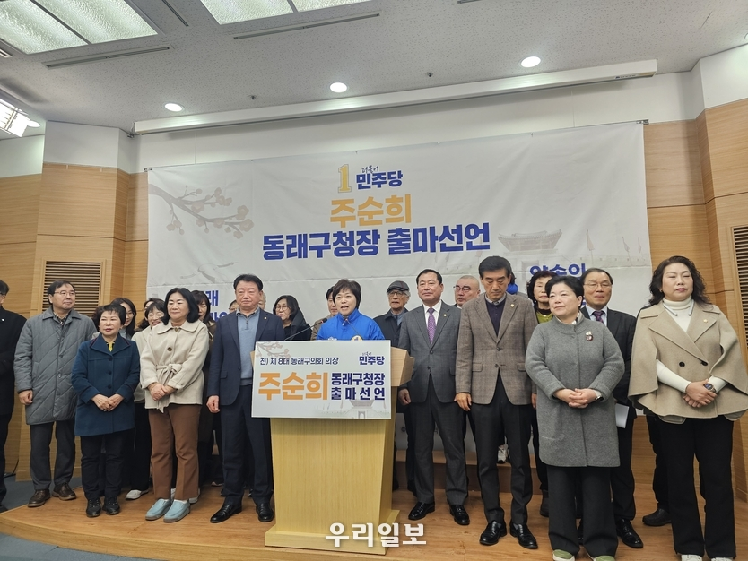
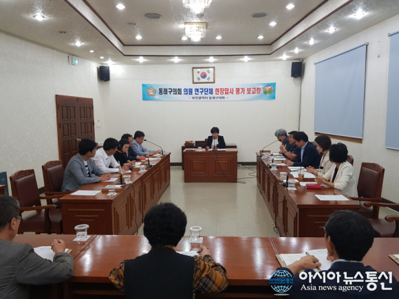
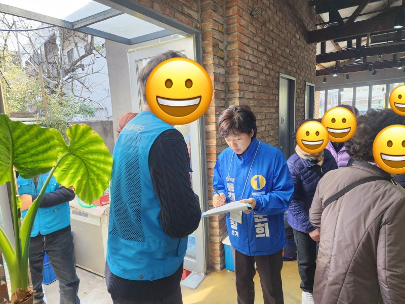
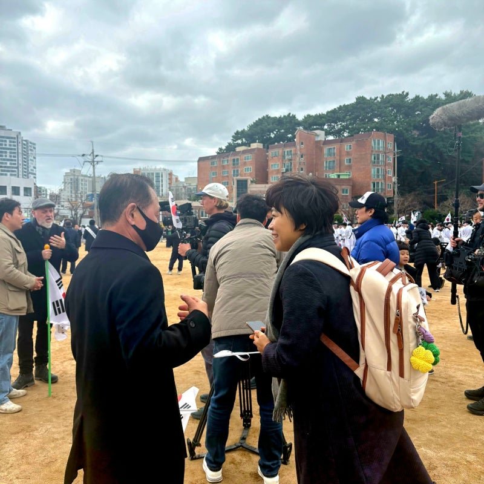
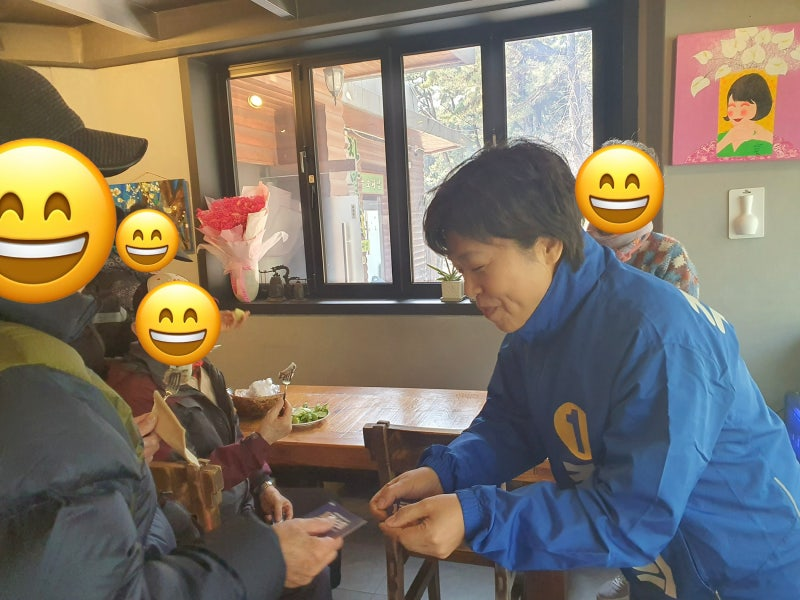
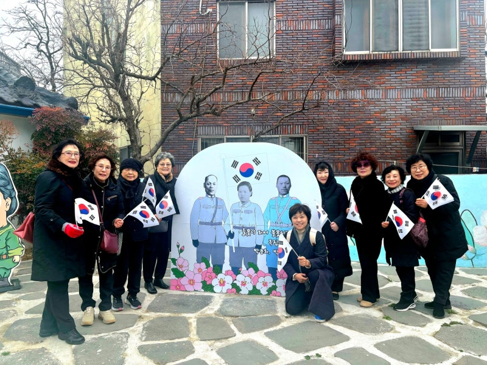
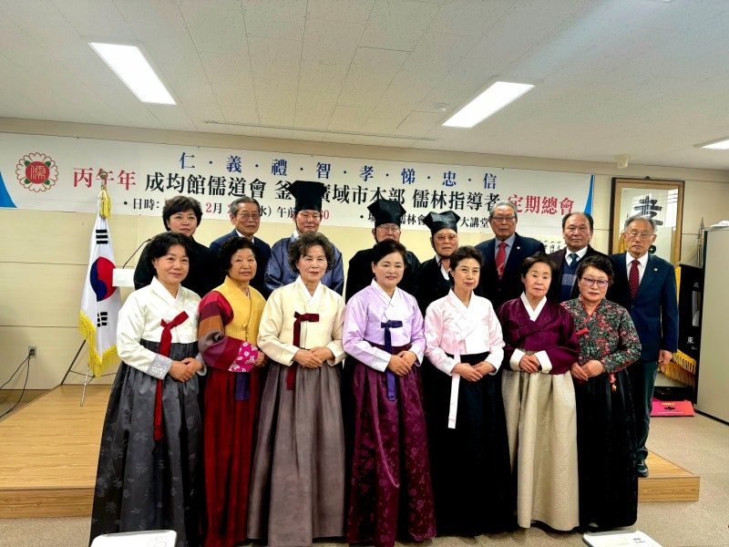
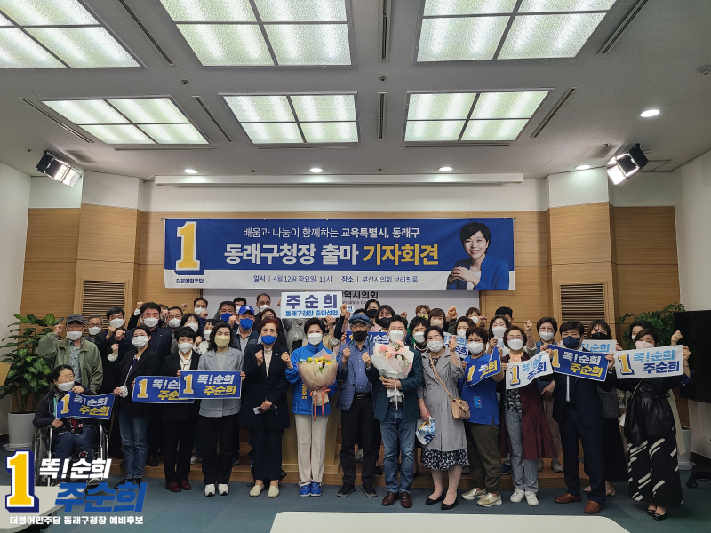

전 동래구의회 의장
민주당 중앙당 부대변인
동래구청장 예비후보
교육특별시, 동래구
배움과 나눔이 함께하는
동래구청장 예비후보
교육특별시, 동래구
배움과 나눔이 함께하는
"동래구의회 의장으로서 쌓은 행정 경험과
교육학 박사과정의 전문성을 바탕으로
사람이 모이고 활력이 넘치는 동래를 만들겠습니다."
더불어민주당 부산 동래구청장 예비후보
세대 간 소외 없는 복지 네트워크를 만들겠습니다
소상공인과 함께 성장하는 동래 경제를 만들겠습니다
디지털 전환에 앞선 미래 준비 도시를 만들겠습니다
글로벌 교육과 문화가 살아 숨쉬는 동래
불통과 낡은 관행을 타파하는 열린 행정







